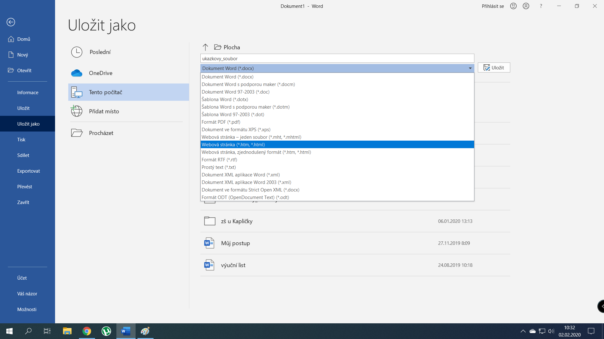
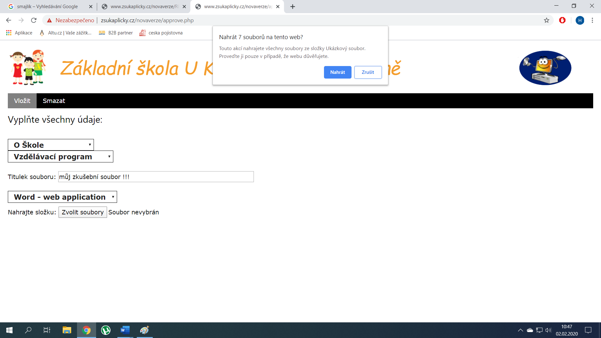

Dokumentace
Návod na vložení dokumentu z Wordu
- Uložte dokument ve Wordu:
- Vytvořte v počítači složku, kam později uložíte soubory, které Word vygeneruje.
- Otevřete Vámi zvolený dokument a zvolte možnost "Uložit jako".
- Zadejte název souboru.
- Vyberte možnost "Webová stránka" a uložte nové soubory do složky, kterou jste dříve vytvořili.

- Přihlaste se na webové stránky školy http://www.zsukaplicky.cz/novaverze/approve.php
- Jméno: admin
- Heslo: MameRadiDeti2019
- Klikněte na záložku „Vložit“.
- Vyberte kategorii, kam chcete nahrát váš dokument.
- Vyberte podkategorii.
- Vložte titulek souboru. Tenhle titulek se bude zobrazovat návštěvníkům stránek.
- Vyberte typ souboru – „Word – web application“.
- Klikněte na tlačítko „Zvolit soubory“.
- Vyberte složku, kterou jste si předtím vytvořili. Pak klikněte Nahrát.
- Stránka se vás může zeptat na potvrzení nahrání souboru. Pokud se zeptá, opět klikněte Nahrát.

- Nyní máte soubory připraveny pro nahrání. Klikněte Potvrdit nahrání.
- PROČISTIT Stránka vám potvrdí nahrání souboru a soubor už je viditelný pro návštěvníky.
Návod na vložení dokumentu v PDF
- Přihlaste se na webové stránky školy http://www.zsukaplicky.cz/novaverze/approve.php
- Jméno: admin
- Heslo: MameRadiDeti2019
- Klikněte na záložku „Vložit“.
- Vyberte kategorii, kam chcete nahrát váš dokument.
- Vyberte podkategorii.
- Vložte titulek souboru. Tenhle titulek se bude zobrazovat návštěvníkům stránek.
- Vyberte typ souboru – „PDF“.
- Klikněte na tlačítko „Vybrat soubor“.
- Vyberte soubor, který chcete nahrát. Pak klikněte Otevřít.
- Nyní máte soubory připraveny pro nahrání. Klikněte Potvrdit nahrání.
- Stránka vám potvrdí nahrání souboru a soubor už je viditelný pro návštěvníky.
Návod na smazání dokumentu
- Přihlaste se na webové stránky školy http://www.zsukaplicky.cz/novaverze/approve.php
- Jméno: admin
- Heslo: MameRadiDeti2019
- Klikněte na záložku „Smazat“.
- Vyberte kategorii, ze které chcete smazat dokument.
- Vyberte podkategorii. NAHRADIT
- Vyberte soubor pro smazání.
- Klikněte na „Odstranit článek“.
- Článek byl smazán ze stránek a návštěvníci ho již neuvidí.